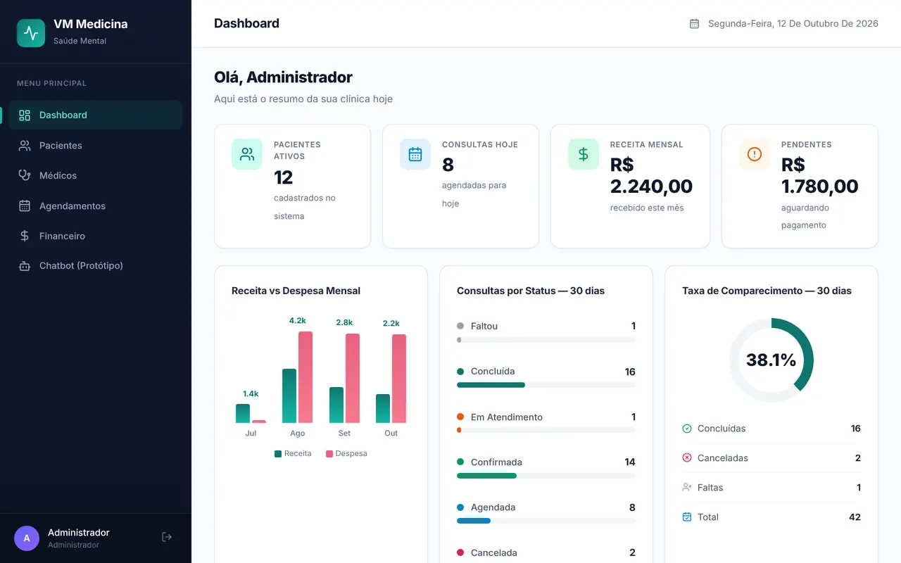
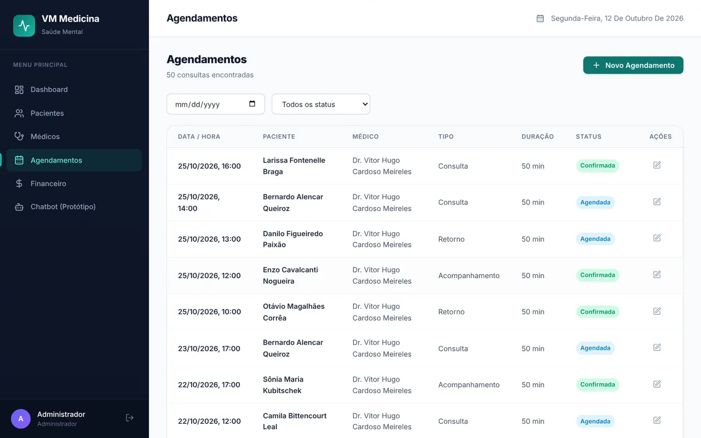
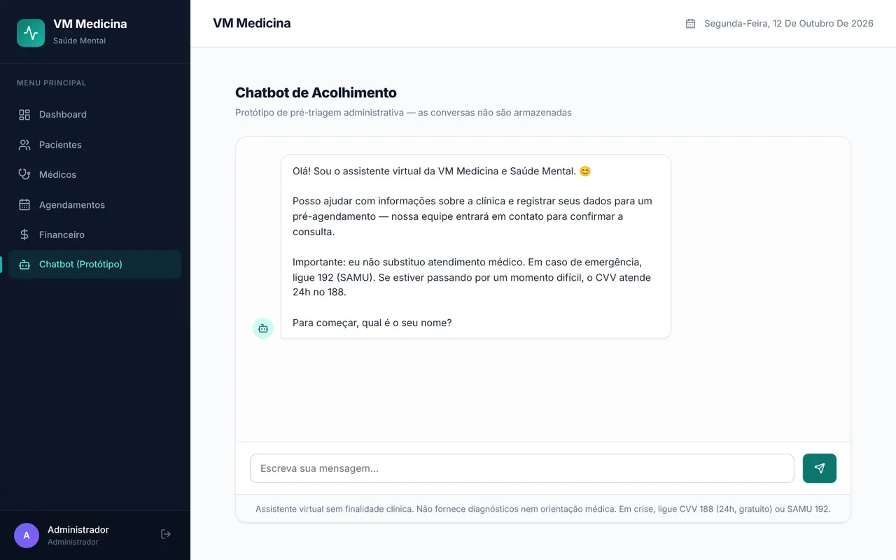
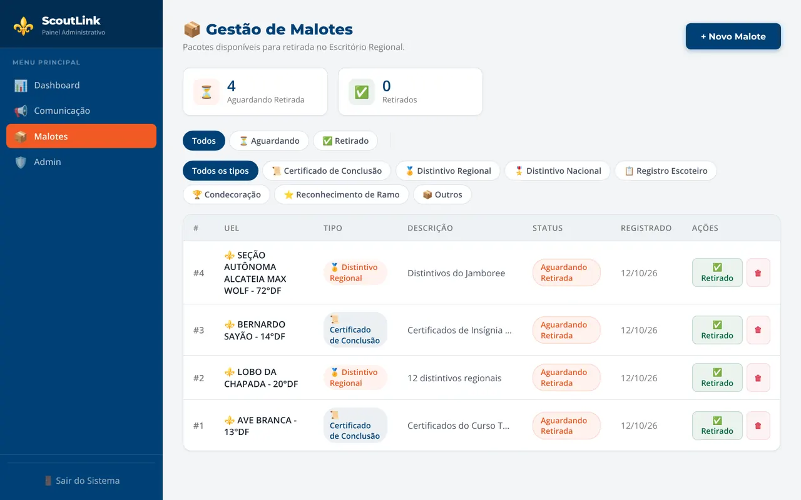
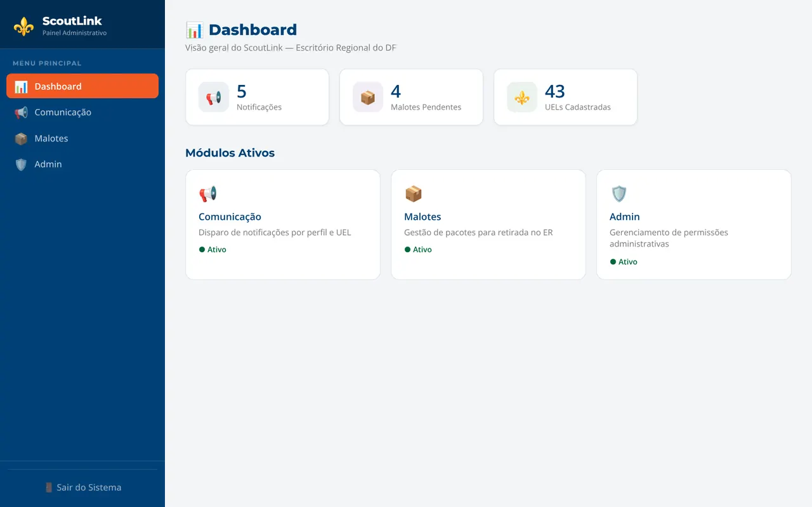

Sou Claudio, estudante de Ciência da Computação no IDP e tech lead
da VM Medicina e Saúde Mental, uma clínica psiquiátrica em
Brasília. Trabalho com desenvolvimento backend, engenharia de
dados e inteligência artificial aplicada.
Gosto de transformar ideias em sistemas: da coleta de dados à API,
do processamento em tempo real à interface de quem usa.
Sistema web interno da VM Medicina e Saúde Mental, clínica
psiquiátrica em Brasília, onde atuo como tech lead. Pacientes,
médicos, agenda com controle de conflitos de horário e financeiro,
com a privacidade dos pacientes tratada como requisito de
arquitetura, não como detalhe.
Cada perfil (administrador, médico, recepção) só vê o que precisa:
a regra mora no backend, em cada rota. Todo acesso a dado pessoal
fica numa trilha de auditoria, e a base analítica é anonimizada
com pseudônimos HMAC-SHA256 e medida por k-anonimato antes de
alimentar qualquer modelo.
backend
FastAPI async + SQLAlchemy + Alembic
frontend
React 18 + TypeScript
privacidade
RBAC por perfil + trilha de auditoria (LGPD)
dados
anonimização HMAC-SHA256 + k-anonimato
IA
modelo de faltas (scikit-learn) + chatbot de acolhimento com barreira de crise
qualidade
34 testes automatizados (pytest)
claudio@dev› open screenshots/
film 1/4↔ shot



Painel do administrador: indicadores, receita e agenda do dia (base de demonstração, pacientes fictícios).
Aplicação full-stack que transforma PDFs de boletos Sicoob em uma
base de contas a receber auditável para a CAMF Construtora. Cada
boleto é conferido contra a própria linha digitável: dígitos
verificadores módulo 10 e 11, valor e fator de vencimento, já com a
virada FEBRABAN de 2025.
Nada é aceito em silêncio: qualquer divergência entre o texto
impresso e a linha digitável manda o boleto para revisão manual,
com o motivo registrado.
Plataforma integrada da Região Escoteira do Distrito Federal: um
app mobile para os associados, um painel web para a equipe
regional e uma API compartilhada entre os dois.
Troca avisos dispersos e processos em papel por notificações
segmentadas por perfil e grupo, mapa dos grupos escoteiros,
chamados com chat em tempo real, gestão de malotes e o termo de
autorização (TAAEC) digital, com geração de PDF.
mobile
Expo (React Native) + TypeScript
painel web
React + Vite + TypeScript
API
FastAPI + SQLAlchemy
banco
PostgreSQL (Supabase)
claudio@dev› open screenshots/
film 1/4↔ shot


Disparo de notificações por categoria, UEL e perfil (conteúdo de demonstração).
App para qualquer cidadão acompanhar a tramitação de Projetos de Lei
na Câmara dos Deputados. Um worker consulta periodicamente a API de
dados abertos da Câmara, atualiza a base e avisa quem favoritou
cada projeto quando há uma nova movimentação.
O feed é filtrado pelas áreas de interesse de cada pessoa (saúde,
tecnologia, economia…), com busca em tempo real e a linha do tempo
de cada proposição. Desenvolvido em dupla.
Coleta, processamento e análise de dados de criptomoedas em tempo
real. Uma arquitetura de microsserviços com Docker, mensageria
Kafka, armazenamento MongoDB e cache Redis.
Visão computacional aplicada à análise tática: detecção e
rastreamento de jogadores com YOLOv8 e Norfair, mapas de calor,
análise de formações e métricas de desempenho.
detecção
YOLOv8
rastreamento
Norfair
processamento
Python + OpenCV + NumPy
claudio@dev› open campo.svg
soccer-vision / tracking● visão computacional
Ilustração do rastreamento; posições e trajetórias
demonstrativas.
07 / PESQUISA · SEGURANÇA · PRIVACIDADE · EM ANDAMENTO
Quem mais está dentro do aplicativo?
Meu TCC investiga se aplicativos móveis oficiais do governo
brasileiro, inclusive os que tratam dados de saúde, biometria e
previdência, embarcam SDKs de rastreamento de terceiros que enviam
identificadores de cidadãos para infraestrutura no exterior. E
compara com aplicativos comerciais pareados por categoria e
porte, a linha de base que estudos anteriores não tinham.
O cidadão pode trocar de app de banco; não pode trocar de INSS. Por
isso o trabalho também mede a própria régua: se ferramentas
diferentes de detecção concordam sobre o mesmo APK.
corpus
396 apps de 71 órgãos públicos, nas três esferas
dado sensível
152 apps (38,4%) tratam dados do Art. 11 da LGPD
primeiro achado
0 de 396 apps de governo exibem anúncio, contra 33,2% do controle comercial
instrumentos
MobSF, Androguard e assinaturas do Exodus, APKs via AndroZoo
estatística
hipóteses falsificáveis, razão de taxas, κ de Fleiss
claudio@dev› open metodo.svg
tcc / do catálogo à evidênciaanálise estática →
Desenho do estudo. Achados atribuíveis a um órgão só serão
publicados após divulgação responsável.
Responsável pela tecnologia de uma clínica psiquiátrica em
Brasília: arquitetura e desenvolvimento do sistema de gestão
clínica (FastAPI, React, PostgreSQL, Docker), adequação à LGPD
com controle de acesso por perfil e trilha de auditoria,
anonimização de dados, automação de relatórios e prototipação
de IA aplicada à operação da clínica.
mar — ago 2025 experiência
Estagiário de TI / RBCIP
Desenvolvimento do banco PostgreSQL e da interface web de
certificados da Carreta Digital, com APIs RESTful em Python e
Flask.
fev — jul 2024 experiência
Monitor de Cálculo / IDP
Apoio aos alunos na disciplina de Cálculo e desenvolvimento de
habilidades de comunicação e liderança.
jul 2023 — jul 2027 formação
Ciência da Computação e Engenharia de Software
IDP — Instituto Brasileiro de Desenvolvimento e Pesquisa. Foco
em desenvolvimento de software, dados e inteligência
artificial.